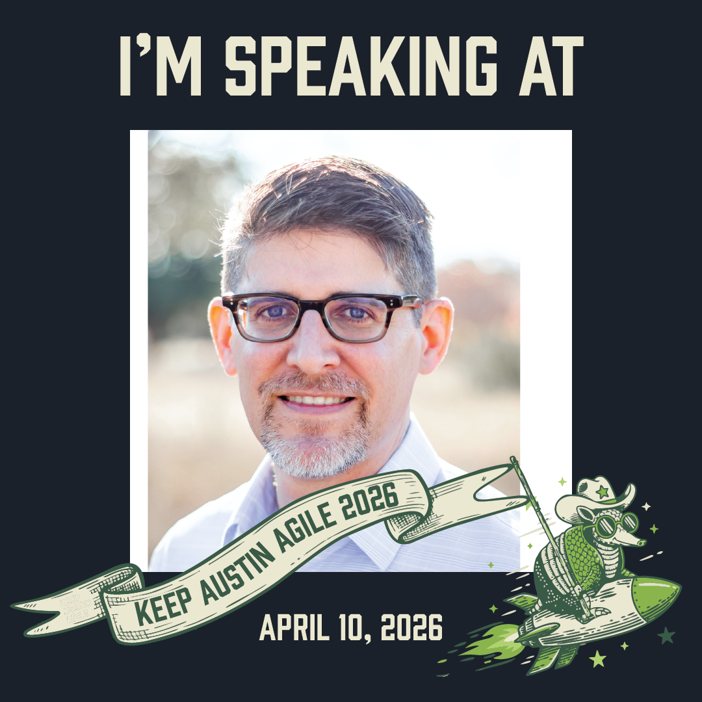

Keep Austin Agile 2026
Conference Speaker — April 2026
Session:
After Agile: Unlocking Agile’s Promised Outcomes at Any Scale
Jay speaks to leaders who need stronger delivery confidence, cleaner architectural leverage, and predictable outcomes without burning out teams.
Recent activity

Conference Speaker — April 2026
Session:
After Agile: Unlocking Agile’s Promised Outcomes at Any Scale
Featured Talk
A talk for engineering leaders on building delivery confidence through architecture, visibility, and systems maturity.
A direct look at why activity-heavy delivery models fail leaders, and what replaces them when the goal is sustainable predictability rather than ceremonial certainty.
Why delivery confidence is shaped upstream by architecture, work design, and system constraints, not downstream pressure applied by reporting or operational oversight.
An argument for executive signal quality over output mythology, with a focus on how leaders make better decisions when engineering systems reveal reality sooner.
Ideal audiences include CTOs, CIOs, CFO partners, VPs and SVPs of Engineering, founders scaling beyond heroics, and executive communities focused on delivery maturity.
This article extends the core speaking thesis: leaders get better outcomes when delivery confidence is engineered upstream through architecture, visibility, and decision-grade signal.
Speaking Inquiries
Jay’s sessions are positioned for leadership audiences that want insight, signal, and sharper executive language around engineering performance.